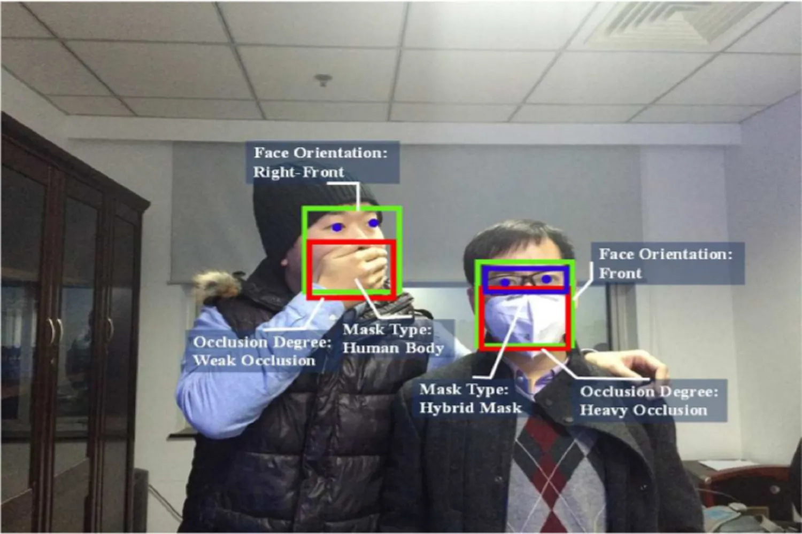
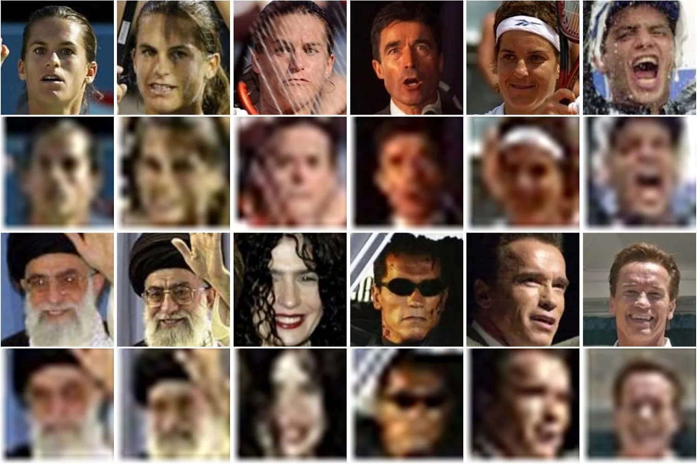
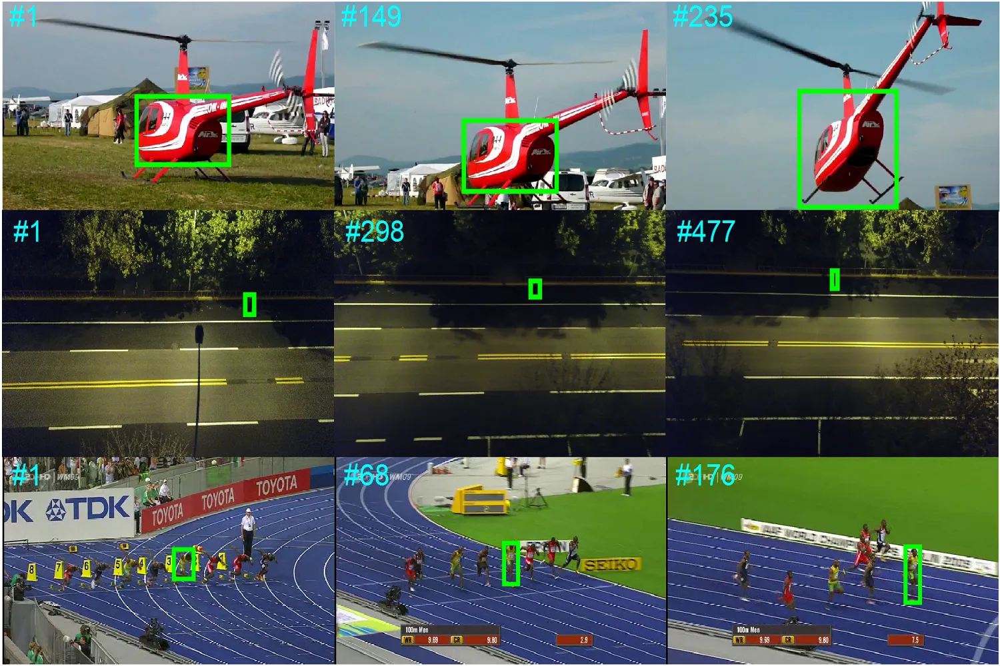
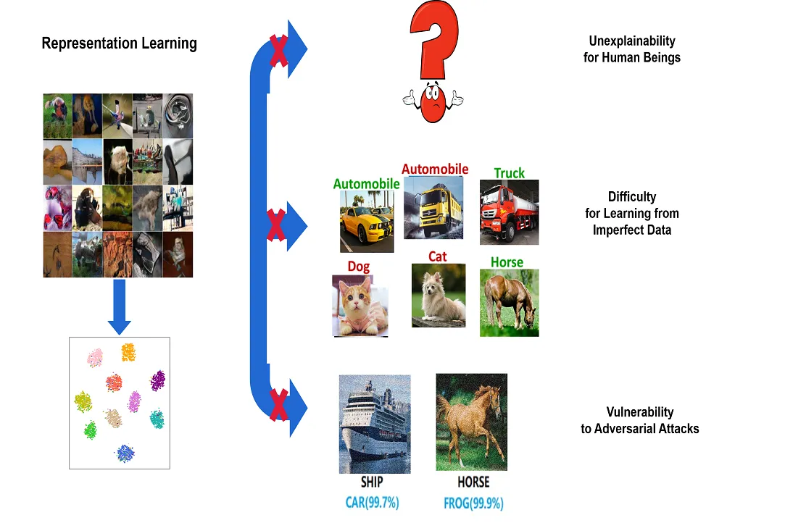
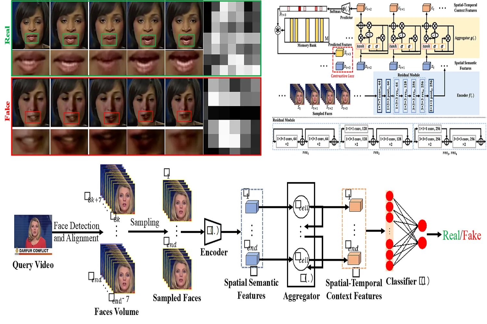
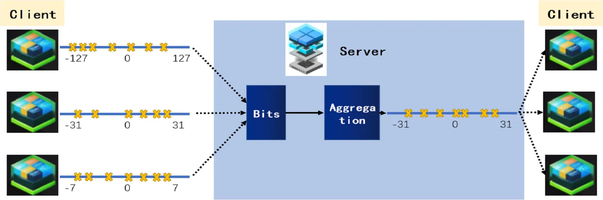

Masked Face Analysis
Many real-world applications like video surveillance and urban governance need to address the recognition of masked faces. In this research, we build the first large-scale MAsked FAce dataset (MAFA) in the world and propose novel solutions（e.g., LLE-CNNs, identity-diversity inpainting, de-occlusion distillation) to alleviate the effect of large occlusions in understanding masked faces, which are published in CVPR, ACM MM and IEEE TCSVT.
Low-Resolution Face Recognition
Low-resolution face images lack sufficient information required for recognition and have a certain degree of ambiguity. In this research, we propose cross-quality knowledge distillation framework and devise a series of effective algorithms (e.g., selective knowledge distillation, bridge distillation, few-shot distillation, hybrid order relational distillation, etc) to facilitate low-resolution face recognition in the wild, which are published in IEEE TIP, ACM MM and AAAI.
Deep Visual Tracking
Visual tracking plays an important role in many vision intelligence applications such as video surveilance, human-computer interaction, military and medical. In this research, we aim to propose effective solutions to facilitate the robustness, accuracy and efficiency of deep tracking in the real-world scenarios, which are publised in ACM MM, IEEE TNNLS and TIP, and have been deployed in some unmanned systems. Our solutions won the first places in two recent challenges (VisDrone-SOT@ICCV2019 and Anti-UAV@CVPR2020).
Controllable Representation Learning
The uncontrollability in real scenario seriously limits the ability of the representation learning, such as the unexplainability for human, the vulnerability to adversarial attack, the difficulty for learning from imperfect data, and other situations where the effective, fair and safe representation is very hard to learn. We work on constructing a series of controllable representation learning algorithms (e.g. coupled-view learning, soft decision trees embedding, multi-granularity representation) to solve the above problems in real-world applications, which are publised in AAAI, ACM MM and IEEE TIP.
Understanding and Fighting Deepfake
The rapid development of Deepfake makes it easier to generate high-fidelity and large quantities fake videos, which can cause serious influence on social public. In order to fight this, this research proposes a spaiotemporal method to detect Deepfake videos using deep 3-dimensional convolutional networks and LSTM. Experiments on DFDC dataset show our method can achieve competitive performance in Deepfake video detection task. Further, to make the detection system more understandable for human, how to make the model above more explainable is the next field to explore in the future.
Collaborative Machine Learning
When it comes to machine learning, the importance of data is self-evident, but most data is not wanted to be made public, a situation known as a "data island". In this research, we propose a controlled shared learning framework and design a series of effective algorithms (such as shared distillation, maximum local sharing, compression sharing) for machine learning under controlled conditions (data controlled, model controlled). These methods are suitable for various tasks (classification, semantic segmentation) and experiments on various datasets with excellent performance.
 京公网安备 11011602000736号
京公网安备 11011602000736号